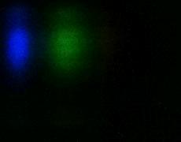

A spectrometer is a device that separates light into a set of separate colors.
Check out the spectra! Search for something in particular, or just browse. Enjoy!
Scientist: Ada P Dyer
Light source: Ecosmart cfl bulb
Transmission sample: none
Date and time: 12/01/2021 - 21:32:38
Tags: lightbulb, tracing-paper, cfl
Scientist: Ada P Dyer
Light source: iPod touch flashlight
Transmission sample: none
Date and time: 12/01/2021 - 21:27:42
Tags: flashlight, tracing-paper, phone
Scientist: Ada P Dyer
Light source: Sunlight
Transmission sample: none
Date and time: 12/01/2021 - 21:20:16
Tags: sun, tracing-paper

Scientist: Ada P Dyer
Light source: Energizer flashlight
Transmission sample: Tracing paper colored with a blue marker
Date and time: 12/01/2021 - 16:24:06
Tags: flashlight, tracing-paper, blue
Scientist: Ada P Dyer
Light source: Energizer flashlight
Transmission sample: None
Date and time: 11/24/2021 - 17:31:35
Tags: flashlight, tracing-paper
Scientist: Ada P Dyer
Light source: Energizer flashlight
Transmission sample: Tap water
Date and time: 11/24/2021 - 17:08:28
Tags: flashlight, no-tracing-paper, water, transmission-sample
Scientist: Ada P Dyer
Light source: Neopixel color 0,255,0 (green)
Transmission sample: Extra virgin olive oil
Date and time: 11/24/2021 - 16:44:36
Tags: neopixel, no-tracing-paper, green, olive-oil, transmission-sample
Scientist: Ada P Dyer
Light source: NeoPixel color 184,0,255 (purple)
Transmission sample: none
Date and time: 11/24/2021 - 16:29:02
Tags: neopixel, tracing-paper, purple
Scientist: Ada P Dyer
Light source: NeoPixel color 0,0,255 (blue)
Transmission sample: none
Date and time: 11/24/2021 - 16:17:47
Tags: neopixel, no-tracing-paper, blue
Scientist: Ada P Dyer
Light source: Invisible ink pen light
Transmission sample: None
Date and time: 11/24/2021 - 15:29:44
Tags: invisible-ink-pen, no-tracing-paper
Scientist: Ada P Dyer
Light source: Invisible ink pen light
Transmission sample: None
Date and time: 11/24/2021 - 15:23:59
Tags: invisible-ink-pen, tracing-paper
Scientist: Ada P Dyer
Light source: sunlite 60 watt 'super mini spiral' super white
Transmission sample: none
Date and time: 11/24/2021 - 14:43:09
Tags: lightbulb, tracing-paper, cfl
Scientist: Ada P Dyer
Light source: Energizer flashlight
Transmission sample: none
Date and time: 11/23/2021 - 21:51:06
Tags: flashlight, no-tracing-paper
Scientist: Ada P Dyer
Light source: Energizer flashlight
Transmission sample: none
Date and time: 11/23/2021 - 20:02:25
Tags: flashlight, tracing-paper
 Scientist: Ada P Dyer
Scientist: Ada P Dyer Scientist: Ada P Dyer
Scientist: Ada P Dyer Scientist: Ada P Dyer
Scientist: Ada P Dyer Scientist: Ada P Dyer
Scientist: Ada P Dyer